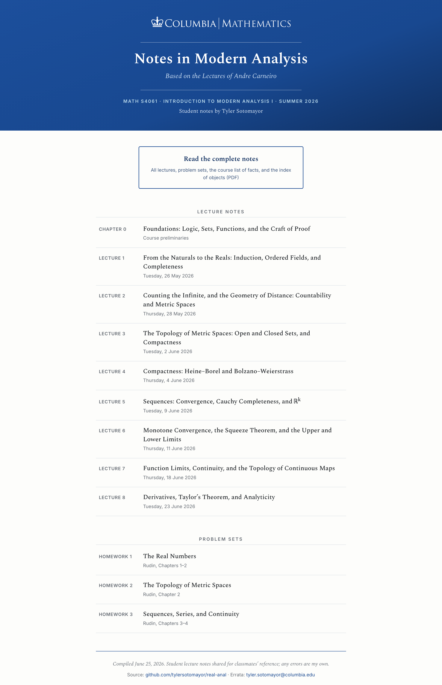
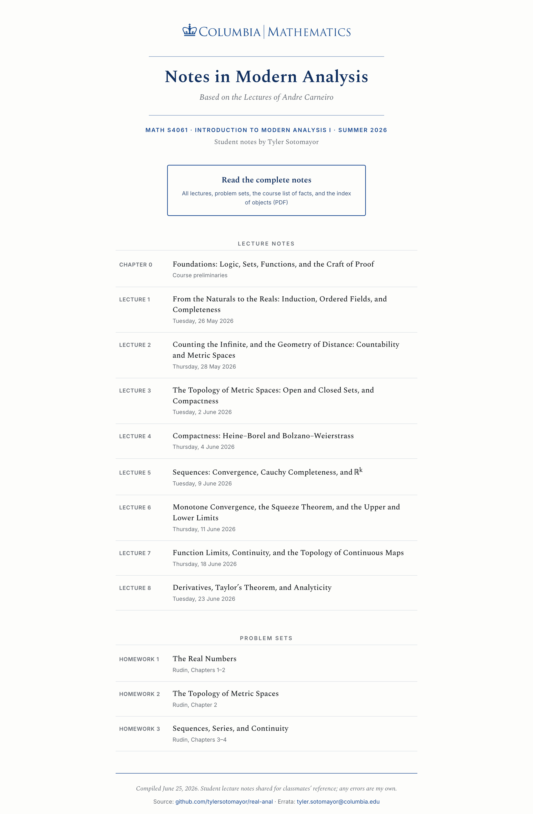
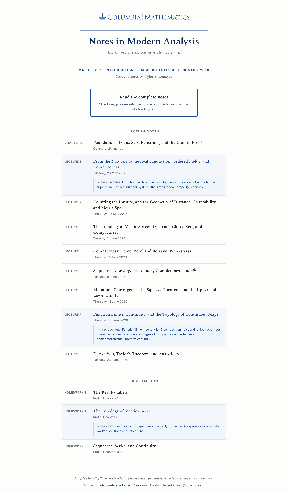

Columbia | Mathematics · MATH S4061 · Round 2
Two treatments of the design you picked. Both keep the Spectral serif and the crown wordmark, and both now add a Problem Sets section and reveal each unit’s topics when you hover. Click a card to open the full, interactive page. The live site at tylersotomayor.github.io/real-anal is unchanged.

The white crown wordmark on a deep Columbia-blue band, then the serif content on white. Bolder, more branded.

The white, centered header you already liked — blue crown and rules — now with the new section and hover previews.
Each row reveals a panel with that unit’s actual topics, pulled from the notes — shown here on Lecture 1, Lecture 7, and Homework 2. (Open a preview and move your mouse over the rows to try it.)
